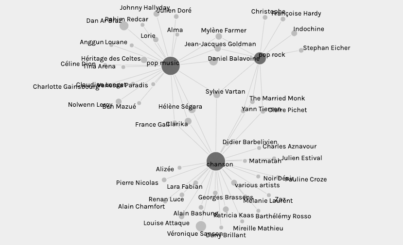

Dans cet exercice nous avons fait...
Cette image montre l'univers des albums sur Wikidata.
Nous avons utilsier un filtre pour sélectionner seulement les genres "chanson", "pop music" et "pop rock".

Téléchargez les données en CSV, 149 Ko..
Téléchargez les données pour Palladio, JSON 30 Ko..